離開杉木林蔭大道, 接著是登上寶城大韓茶園山丘上的大海展望台 (바다전망대), 也是大韓茶園最高的地方, 來到登山口, 發覺工程正在進行中, 不可以繼續沿茶園邊陲的步道走, 要循遠離茶園的改道走! 肯定不可以邊走邊看茶園風光, 真是大煞風景!
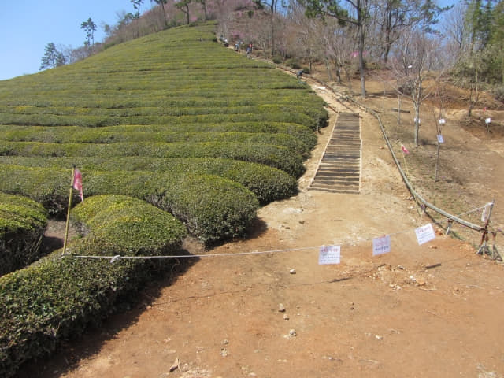
沿凹凸不平、彎彎曲曲的爛泥路一直往上走, 間中也走到茶園邊陲看看風景。莫非又在建造纜車? 不會吧? 那麼矮的山丘!
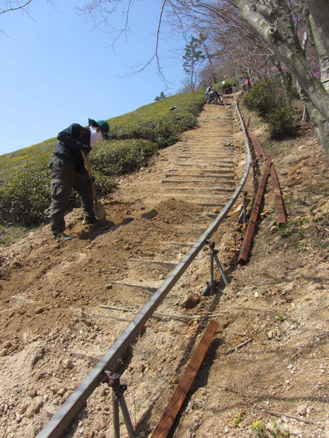
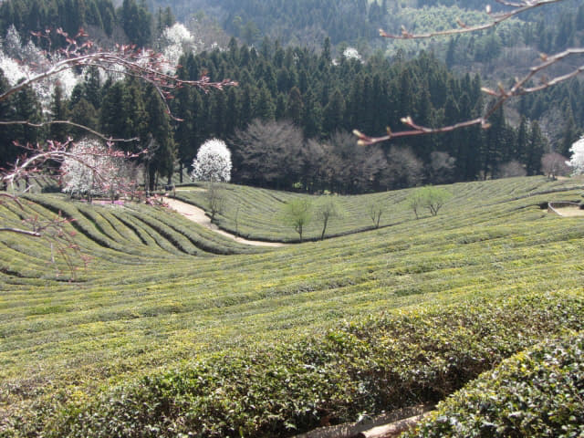
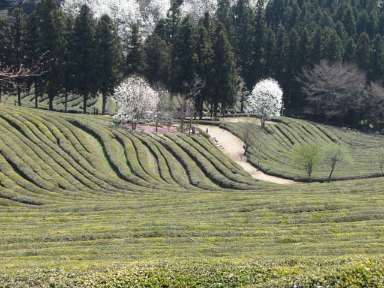
寶城大韓茶園 山腰的地方
繼續沿崎嶇爛泥路往上走, 來到大約山腰的地方, 又走到茶園邊陲看看。抬頭一望, 不是嗎? 工程好像一直伸延到山頂? 那麼豈不是看不到風景? 看見形勢不妙, 也不理會什麼規矩了, 便跨過工地和鐵欄, 走到茶園內欣賞風景。可能工作人員見到只有我一個人, 也沒有阻止。
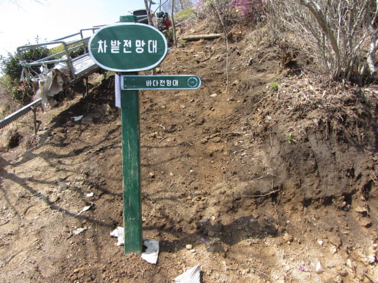
走進茶園, 沿茶樹間的小道向前走。嘩! 風景真是很美。
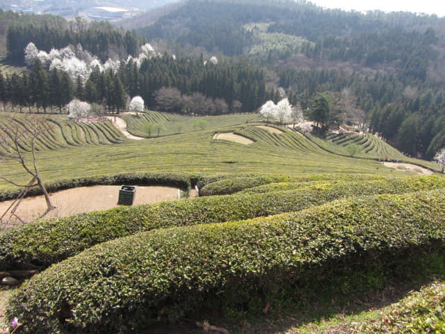
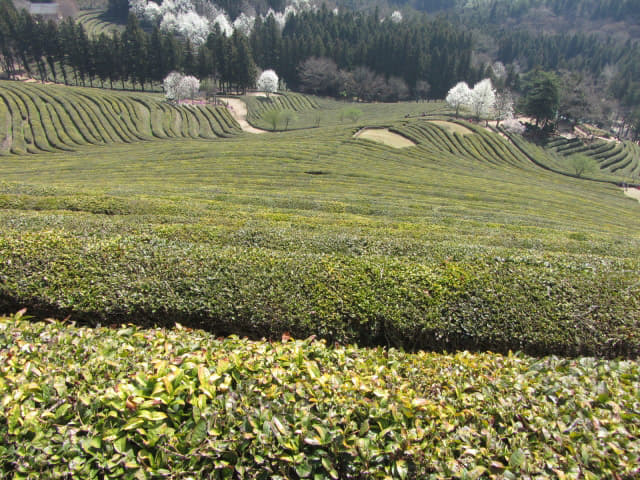
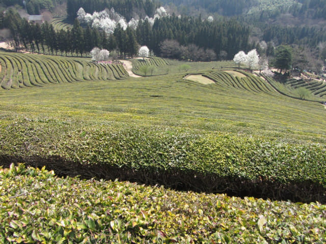
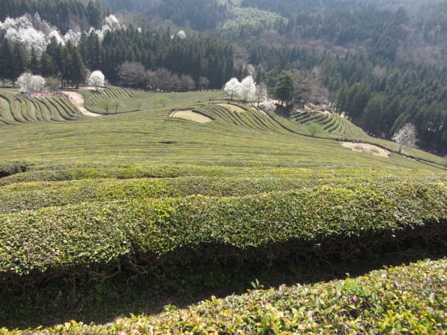
在茶園山腰的地方俯瞰完風景, 總算得到一些安慰, 繼續沿爛泥路往上走, 只擔心展望台已經封閉, 白走一趟。
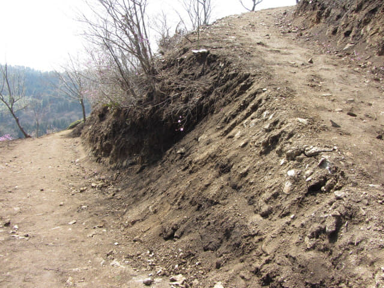
茶園種植區最高、最後一行茶樹
又走高了很多, 來到接近山頂的地方, 感覺景色又壯麗了很多, 望清楚, 發覺這裡已經是茶園種植區最高、最後一行茶樹, 便走進茶園, 沿小道走, 飽瞰山下風光。
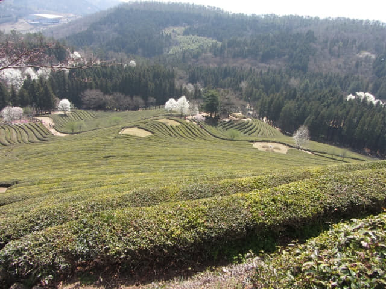
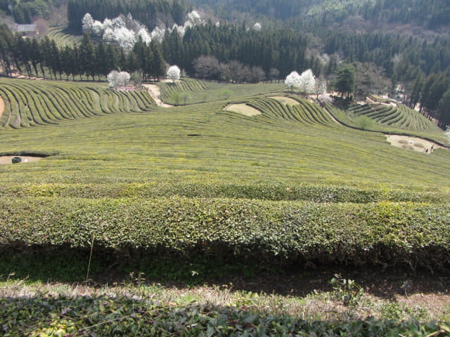
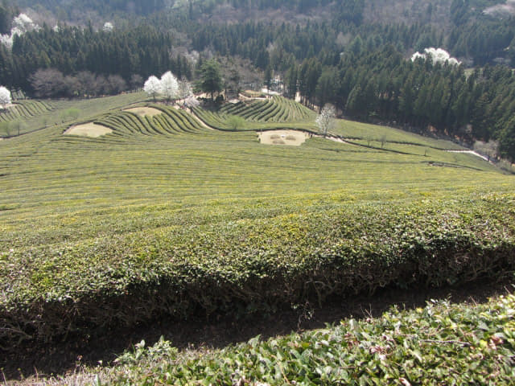
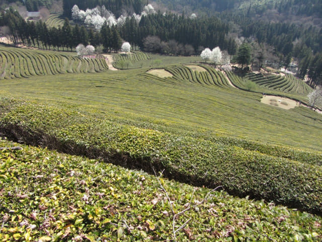
看! 已經是茶園最後的一行茶樹, 也是茶園種植區最高的地方, 再往上走便是山頂了。
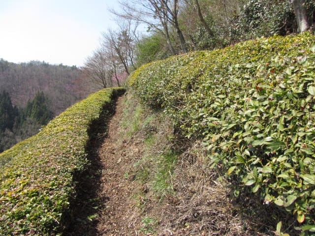
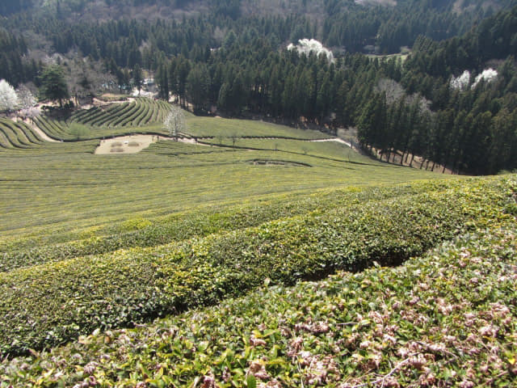
再從左至右細心欣賞。山丘下左邊的地方便是杉木林蔭大道的出入口, 剛才便是從那裡開始登山的。

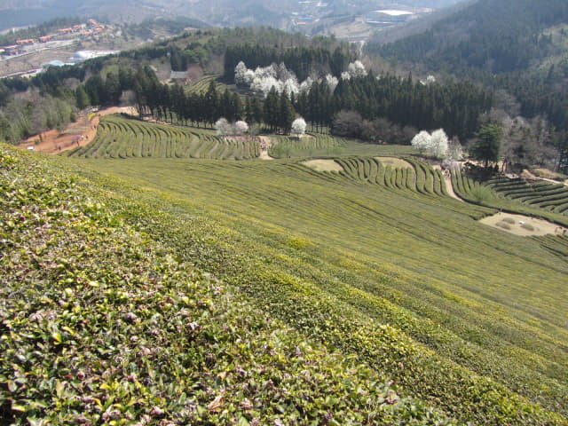
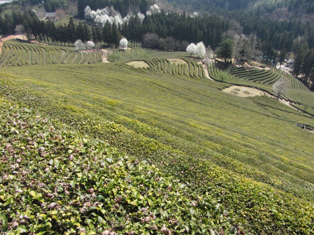
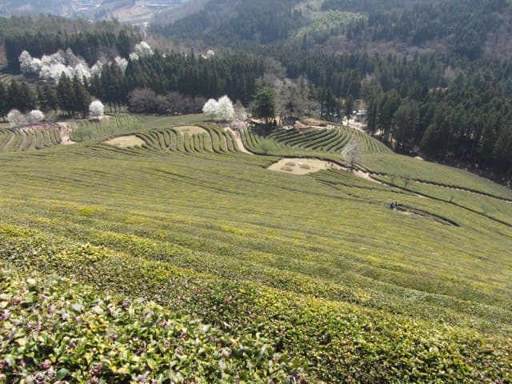
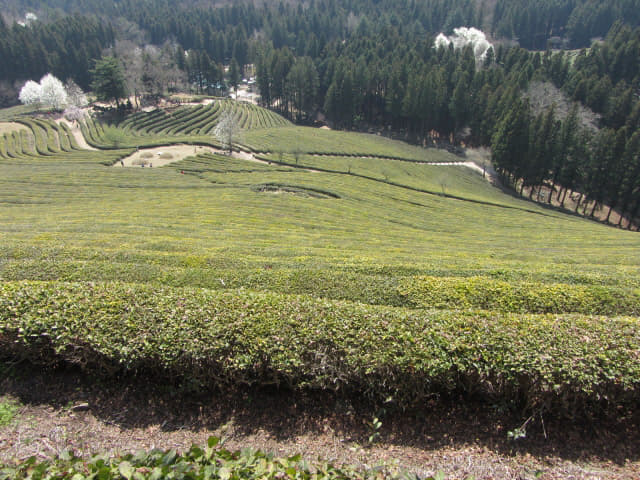
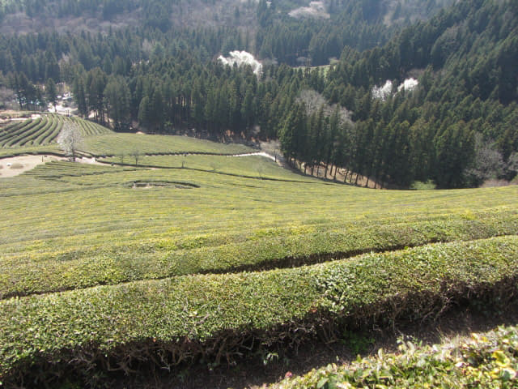
層層排列, 起伏交織, 壯觀迷人!
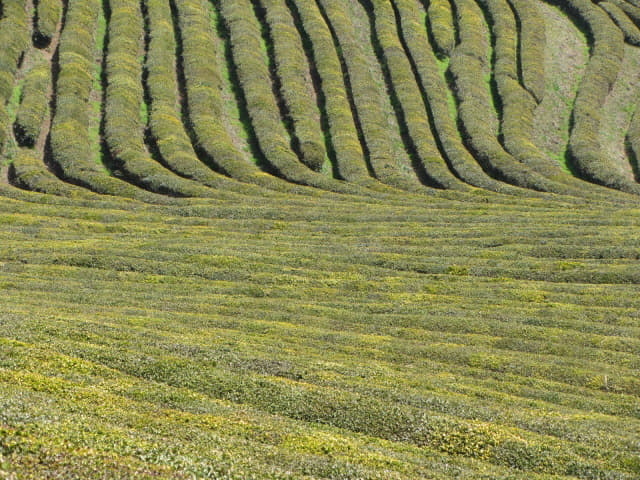
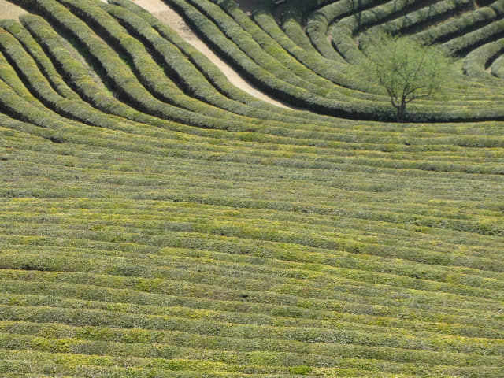
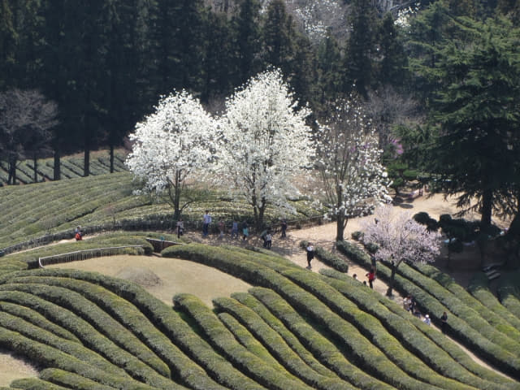